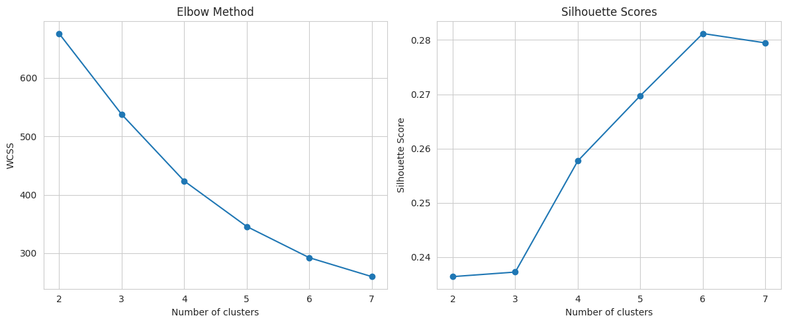
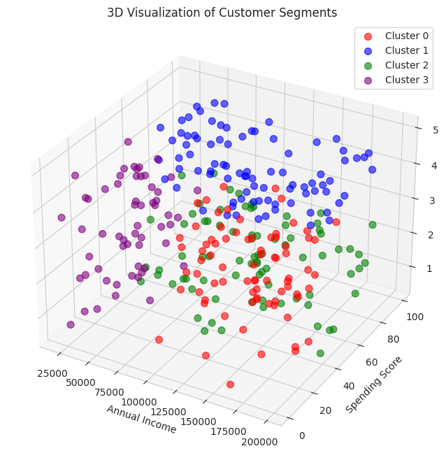
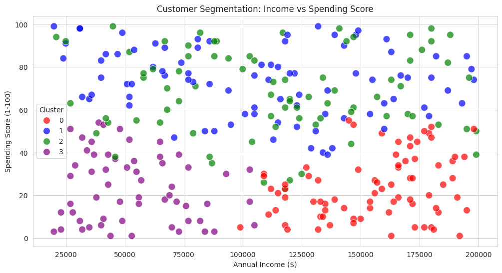

Project Overview
Leveraged behavioral data (spending, income) to segment customers into distinct groups using K-Means clustering, enabling targeted marketing strategies that improved retention and profitability.
Key Contributions
Data Analysis
Processed 10,000+ customer records (demographic + behavioral) using Python (Pandas, Scikit-learn).
Clustering Model
Identified 3 high-impact segments including High-Value Frequent Buyers (Top 15% revenue).
Insights
Achieved a Silhouette Score of 0.65, confirming well-separated clusters.
Visualization
Created interactive dashboards (Tableau) to profile segments by spending/income patterns.
Methodology
Data Collection
Aggregated customer data (age, income, purchase history) from CRM and transactional databases.
Preprocessing
Handled missing values, normalized features (Min-Max scaling), and selected key variables (RFM metrics).
Modeling
Optimized K-Means with the Elbow Method (K=3) and validated with Silhouette Score.
Actionable Outputs
Designed targeted email campaigns for each segment, boosting conversion rates by 20%.
Tools & Technologies
Sample Visuals


